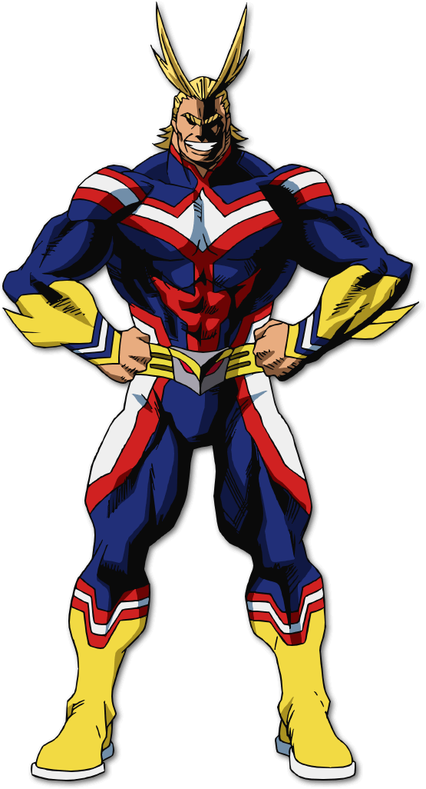
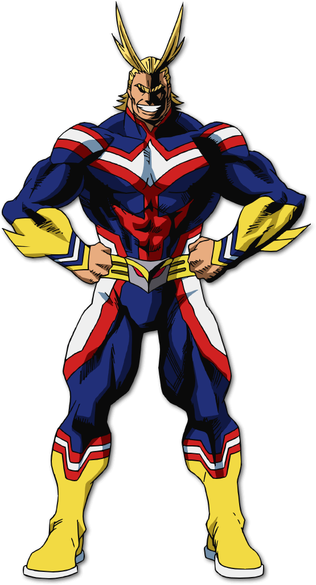

IZUKU MIDORIYA
Quirk: One For All
Izuku Midoriya, also known by his childhood and hero name Deku, is the main protagonist of the My Hero Academia franchise. He was originally tormented and bullied throughout his life for lacking a Quirk by mainly his childhood-friend-turned-bully Katsuki Bakugo and many people along with him, but after meeting his idol, the No. 1 Hero, All Might and impressing him with his bravery and skills, he would then gain the legendary quirk One For All, and became a Hero-in-training with his abilities at Class 1-A as well as being its ninth and final user. He is one of Ochaco Uraraka's closest friends.

 
